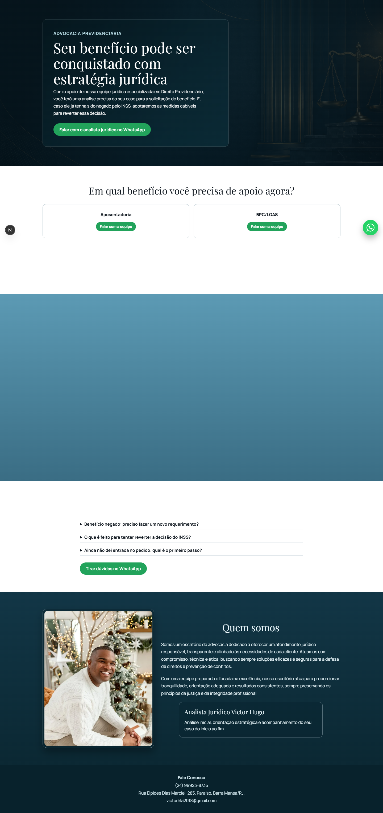
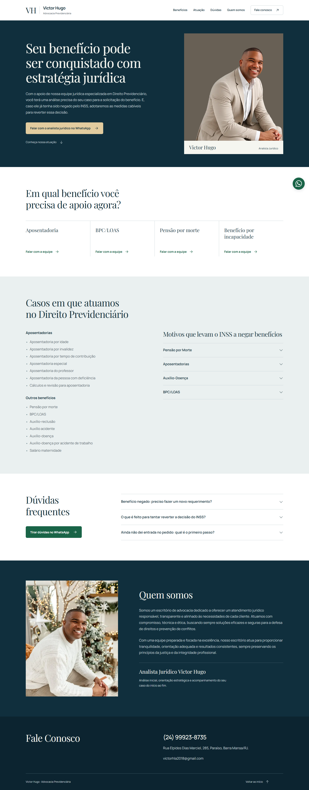

Victor Hugo — comparação visual
Victor Hugo · comparação visual
Capturas reais feitas com Playwright em 390, 768 e 1440 px. O antes usa a prévia Webpack; o depois usa a build de produção. As áreas vazias do antes foram registradas após percorrer a página e refletem o comportamento das animações de entrada.
Relatório de auditoria · Resultados do antes · Resultados finais
Antes
Depois